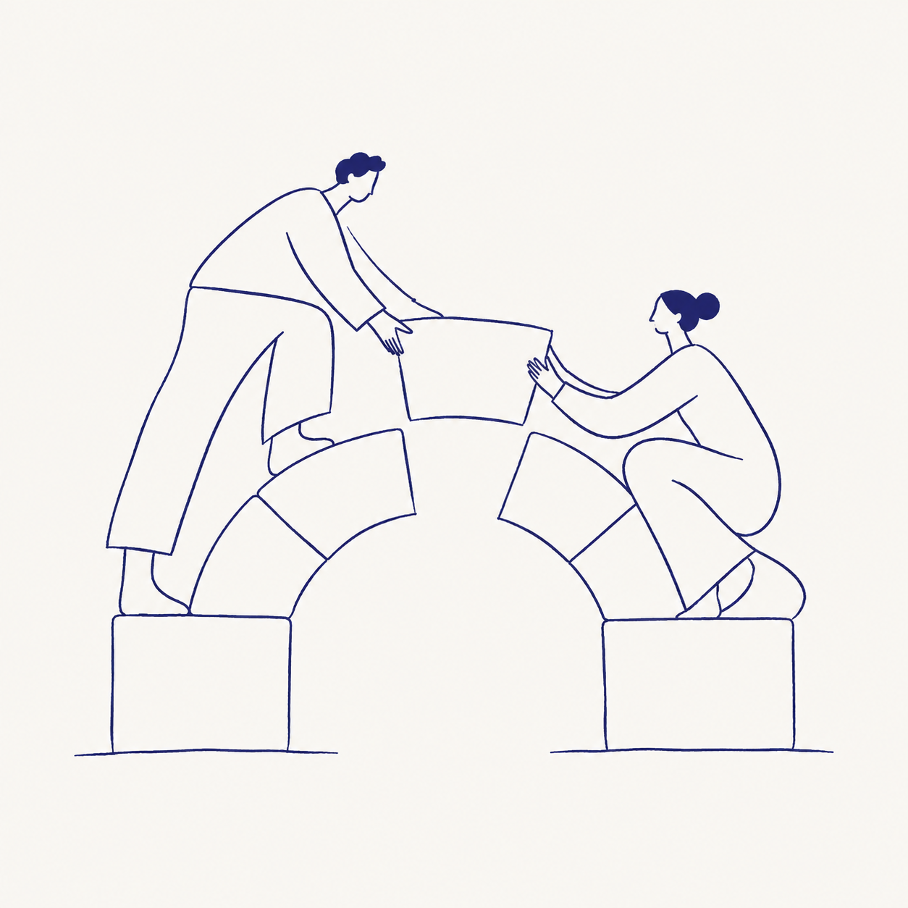

01
Odoo, bien
implementado.
Conecta ventas, compras, inventario y proyectos en un solo lugar. Configuramos tu operación y acompañamos la puesta en marcha.
Cotizar implementaciónSOFTWARE EMPRESARIAL, CON SENTIDO HUMANO
Implementamos Odoo y creamos software a medida para que tus procesos fluyan. Cerca de tu negocio. Cerca de ti.
+5 años de experiencia convirtiendo ideas en soluciones.

01 / TECNOLOGÍA + PERSONASTodo funciona mejor cuando conecta.
01 / LO QUE HACEMOS
La tecnología debe adaptarse a tu forma de trabajar. Elegimos y construimos las herramientas que tu empresa realmente necesita.
Conecta ventas, compras, inventario y proyectos en un solo lugar. Configuramos tu operación y acompañamos la puesta en marcha.
Cotizar implementaciónDiseñamos sistemas web, aplicaciones y plataformas para esos procesos únicos que hacen diferente a tu empresa.
Explorar mi proyectoExtendemos Odoo con funciones hechas para tu operación. También desarrollamos módulos independientes para tus sistemas.
Cotizar un móduloIntegramos tus herramientas y automatizamos flujos de trabajo para reducir la doble digitación y los pasos manuales.
Conectar mis procesosCapacitamos con situaciones reales de tu negocio. Sesiones prácticas y documentación para usar el sistema con confianza.
Preparar a mi equipoProtección avanzada de datos, permisos y respaldos según tu infraestructura. Soporte todo el año o durante la vigencia de tu licencia, según el plan contratado.
Cuidar mi operación02 / TECNOLOGÍA CON PERSONAS DETRÁS
Las mejores soluciones empiezan escuchando. Trabajamos contigo y, cuando el proyecto lo necesita, en campo: conociendo tus procesos donde realmente suceden.
Conocimiento técnico al servicio de problemas reales de gestión.
Conversas con quienes diseñan y desarrollan tu solución.
Alcance, entregables, costos y etapas definidos antes de comenzar.
Accesos por rol, copias de seguridad y seguimiento según el servicio.
03 / ASÍ TRABAJAMOS
Un proceso claro, con avances que puedes ver y decisiones que tomamos contigo.
Entendemos tu operación, tus prioridades y lo que hoy te quita tiempo. Coordinamos visitas cuando hacen falta.
Definimos la solución, el alcance, el presupuesto y las etapas. Sabes qué vas a recibir y cómo lo validaremos.
Configuramos o desarrollamos, probamos contigo y capacitamos a tu equipo antes del lanzamiento.
Acompañamos la puesta en marcha y damos continuidad con el soporte acordado. Tu operación sigue evolucionando.
04 / ENCUENTRA TU PUNTO DE PARTIDA
Empieza con lo que necesitas hoy. Cada propuesta se ajusta a tus procesos, usuarios e integraciones.
ORGANIZAR & CONECTAR
Una base sólida para centralizar la gestión de tu negocio.
CREAR & DIFERENCIAR
Cuando tu forma de trabajar necesita una solución propia.
CUIDAR & EVOLUCIONAR
Continuidad para tu sistema y respaldo para tu equipo.
Los precios, plazos, visitas, horas de soporte y tiempos de respuesta se detallan en tu propuesta. Las licencias de Odoo, el alojamiento y los servicios de terceros se cotizan por separado cuando correspondan.
05 / SIN LETRA PEQUEÑA
Cada empresa es distinta.
También podemos resolver tu caso juntos.
Primero revisamos tus procesos. Si Odoo cubre tus necesidades, lo configuramos; si hace falta una función específica, podemos desarrollar un módulo. Si tu operación requiere otra solución, planteamos un sistema a medida.
La implementación y las licencias son conceptos distintos. La propuesta indicará la edición, las aplicaciones, el alojamiento y los costos de terceros que correspondan. No publicamos una tarifa de licencia fija en esta web.
Sí. Coordinamos trabajo en campo para conocer tu operación, validar procesos o capacitar a tu equipo. La cobertura, disponibilidad, viáticos y número de visitas se acuerdan antes de contratar.
Depende del alcance, las integraciones y los datos que haya que migrar. Preparamos una propuesta con etapas, entregables, plazos y forma de pago. La contratación se confirma después de que apruebes esas condiciones.
Ofrecemos cobertura anual o durante la vigencia de la licencia, según el plan contratado. Eso no implica atención 24/7: horarios, canales, horas incluidas y tiempos de respuesta quedan definidos en el acuerdo de soporte.
Definimos medidas según tu infraestructura y el alcance contratado: permisos por rol, conexiones cifradas, copias de seguridad, revisión de accesos y pruebas de recuperación. Las responsabilidades y la frecuencia de estas tareas se documentan en la propuesta.
Sí. Revisamos primero su estado, documentación, accesos y compatibilidad. Con ese diagnóstico proponemos módulos, integraciones o mejoras viables, y definimos cómo intervenir sin perder de vista tu operación diaria.
06 / EMPECEMOS POR CONVERSAR
Cuéntanos qué quieres mejorar. Preparemos el camino hacia una empresa más conectada.
Perú · Atención remota y en campo